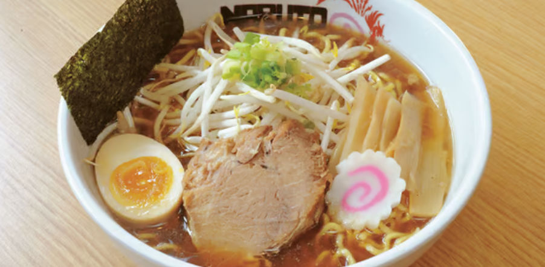

Naruto Ramen!

Description
Are you ready to embark on a flavorful journey to the heart of Japanese cuisine?
Join us as we unravel the secrets of Naruto Ramen, a beloved and
iconic dish that has captivated food enthusiasts worldwide!
Ingredients
- 4 cups of pork or chicken broth
- 2 packs of ramen noodles
- 2-3 slices of roasted pork (chashu)
- 2 soft-boiled eggs
- 1 cup of sliced bamboo shoots
- 1 cup of fresh bean sprouts
- 2-3 green onions, thinly sliced
- Nori (seaweed) sheets, cut into small strips
- Soy sauce, to taste
- Salt and pepper, to taste
Steps
- Prepare the Broth
- In a large pot, bring the pork or chicken broth to a simmer over
medium heat. Allow it to bubble gently for about 20-30 minutes
to enhance the flavors. Skim off any impurities that rise to
the surface.
- Cook the Noodles
- While the broth simmers, cook the ramen noodles according to the
package instructions. Make sure to cook them al dente to maintain a
pleasing texture. Once cooked, drain the noodles and set them aside.
- Prepare the Toppings
- In the meantime, prepare the toppings for your Naruto Ramen. Slice
the roasted pork into thin pieces, peel and halve the soft-boiled eggs,
and gather the sliced bamboo shoots, bean sprouts, green onions, and
nori strips.
- Season the Broth
- Taste the simmering broth and season it with soy sauce, salt, and
pepper to your preferred taste. Adjust the flavors as needed to
achieve the desired balance of savory and umami.
- Assemble the Ramen Bowls
- Divide the cooked ramen noodles into individual serving bowls.
Ladle the hot broth over the noodles, ensuring they are fully submerged.
Arrange the slices of roasted pork, soft-boiled eggs, bamboo shoots,
bean sprouts, green onions, and nori strips on top of the noodles.
- Customize and Serve
- Feel free to add additional toppings or condiments according to your
preference. Some popular options include spicy chili oil, sesame seeds,
or a drizzle of sesame oil. Serve the Naruto Ramen hot and garnish with
extra green onions and nori strips for a visually appealing presentation.
Don’t forget the Narutomaki slices!
*link to the original recipe, pls don't get mad at me :3 this is
just for learning purposes